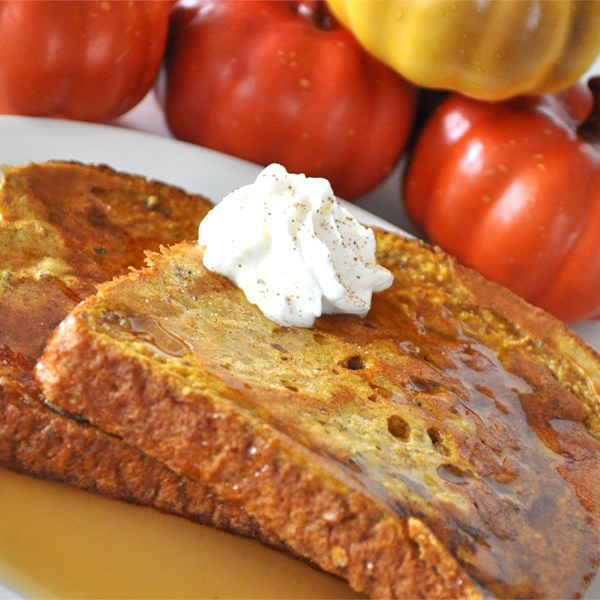

<div id="tab1" class="tab-content current">
	<div class = "content">
		<arcticle class="breakfast-recipe">
			<header><h2>Pumpkin Pie French Toast</h2></header>
			

			<div class = "ingredients">
				<h3>Ingredients</h3>
				<ul>
					<li>3 large eggs</li>
					<li>1/2 cup half and half cream</li>
					<li>1/4 cup canned pumpkin puree</li>
					<li>1 teaspoon ground cinnamon</li>
					<li>1 teaspoon pumkin pie spice</li>
					<li>1/4 cup finely chopped walnuts</li>
					<li>8 slices of day old bread</li>
				</ul>
			</div>
			
			<h3>Directions</h3>
			<p> Heat a lightly oiled skillet over medium heat. </p>
			<p>Whisk eggs, half and half, pumpkin, cinnamon, vanilla extract, pumpkin pie spice, and walnuts together in a bowl. Soak one slice of bread at a time in the pumpkin mixture, then place in the prepared skilled. Repeat with the remaining slices of bread. Stir the pumpkin mixture between dips to keep the walnuts from settling. Cook the bread until golden brown, about 3 minutes on each side.</p>
		</article>
	</div>
</div>